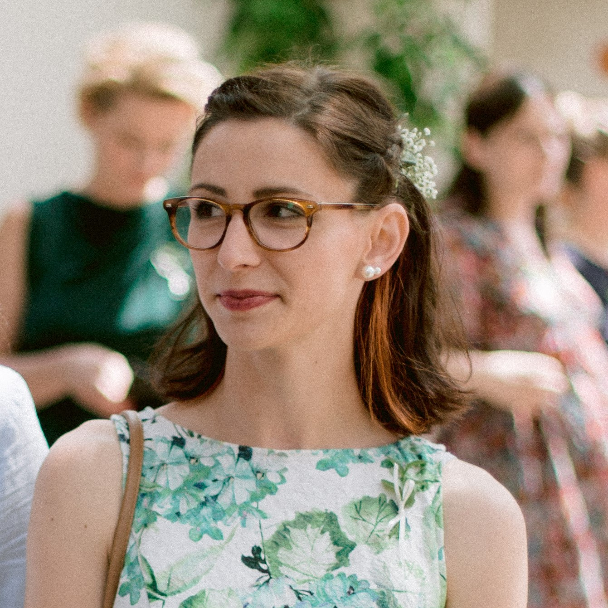
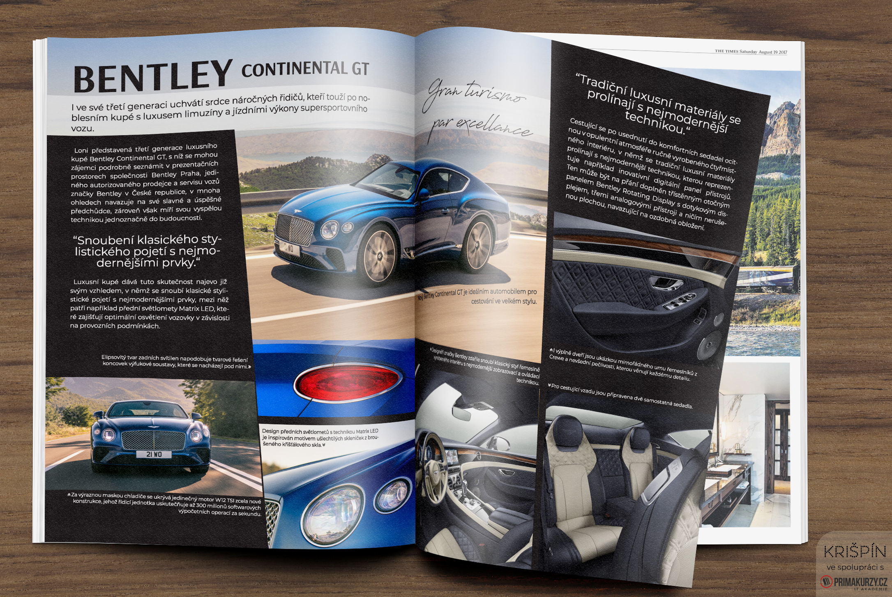
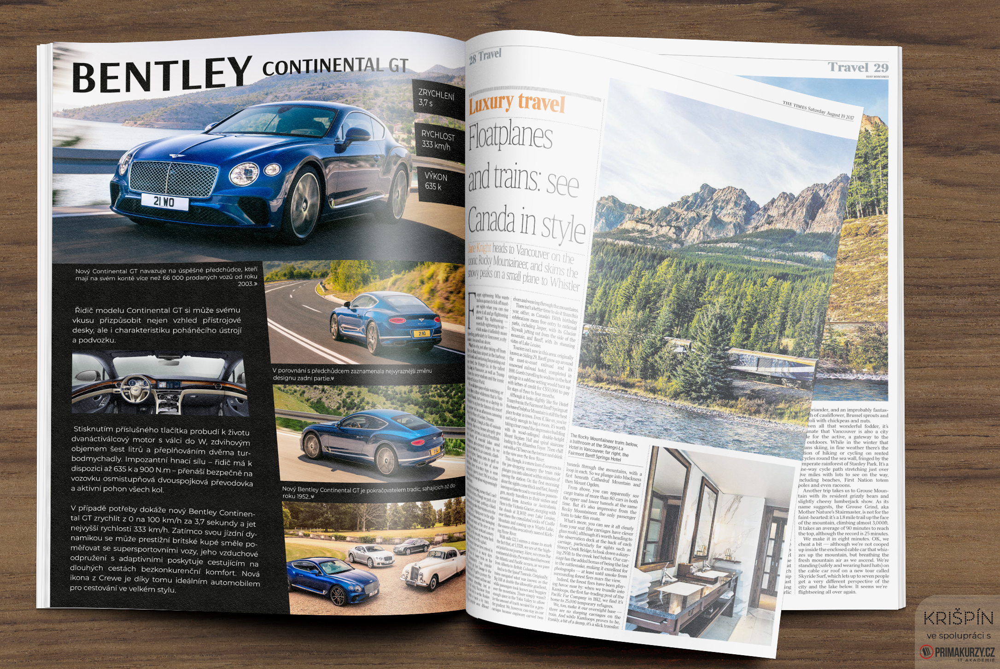
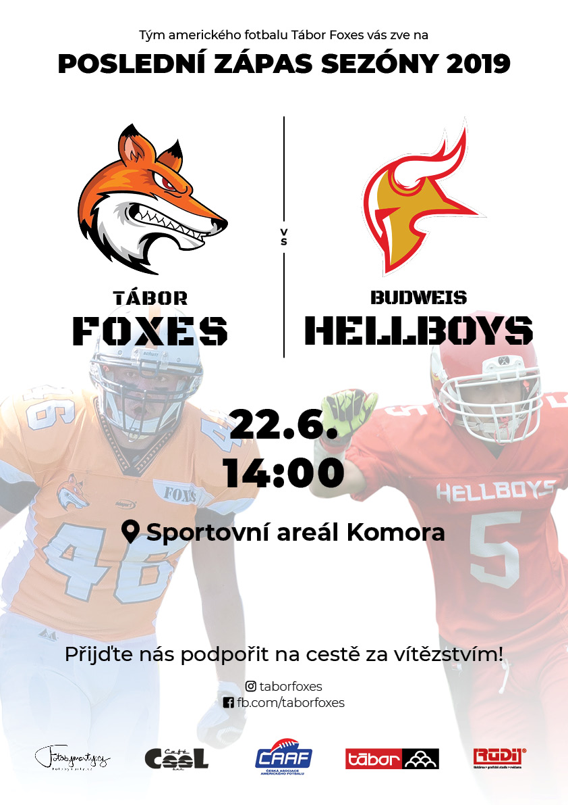
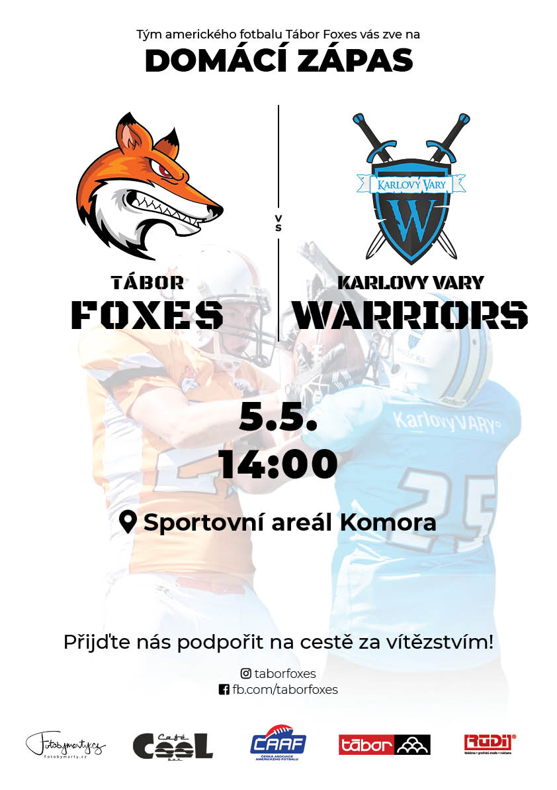
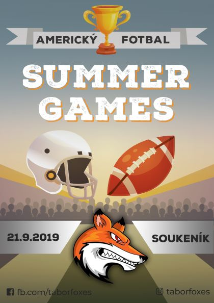
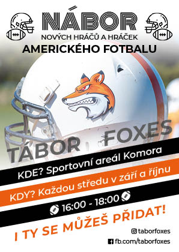
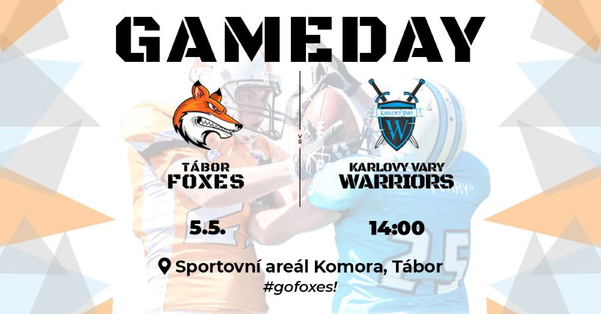
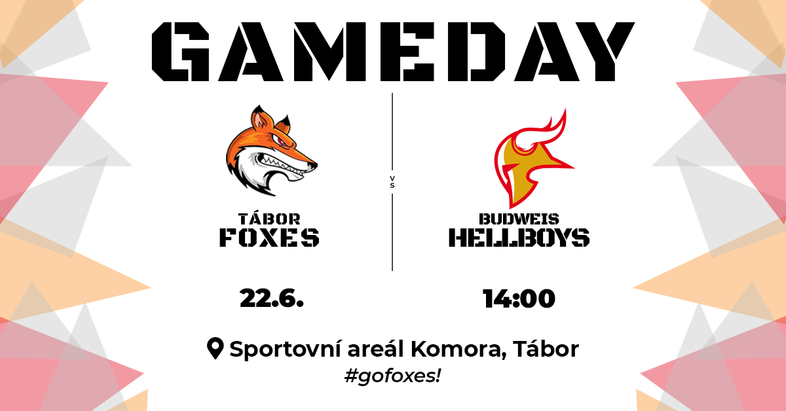

Kristýna Nohejlová

Tiskařka v reklamní agentuře
Junior graphic designer
E-mail
LinkedIn
Něco o mně
Jmenuji se Kristýna, ale říká se mi Krišpín.
Jsem tiskařka pokoušející se ve volném čase postupně vzdělávat v IT.
Žiji a pracuji v Táboře, proto se omlouvám za možné pozdní příchody, České dráhy jsou nevyzpytatelné. :)
Zájmy
grafický design - rekvalifikace (Adobe Id, Ps, Ai)
kresba, malba
ornitologie
ochrana přírody
americký fotbal
Ukázky mých prací







